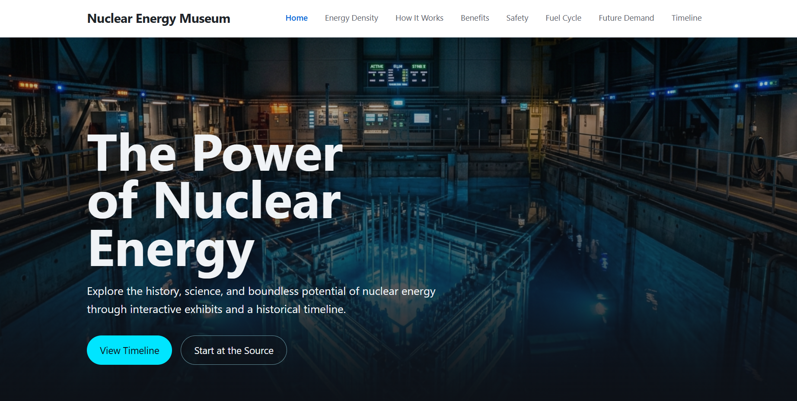

Nuclear Energy Digital Museum
Problem: Nuclear energy generates roughly 20% of U.S. electricity and holds the strongest comparative safety record of any major energy source, yet public understanding remains shallow and distorted by decades of misrepresentation — leaving visitors unable to evaluate safety, waste, or demand arguments with evidence.
Solution: Built a digital museum exhibit that walks visitors through the full nuclear energy story: the reactor process, comparative safety and emissions data, energy density visualization, the fuel cycle, and the connection to rising AI data center demand — all organized around a historical timeline with navigable detail pages.
Result: A fully accessible, performance-audited, GitHub Pages-deployed exhibit that teaches the reactor process, reframes safety through data, and contextualizes nuclear's role in future electricity demand, verified against acceptance criteria with Playwright browser tests and Lighthouse CI scoring.